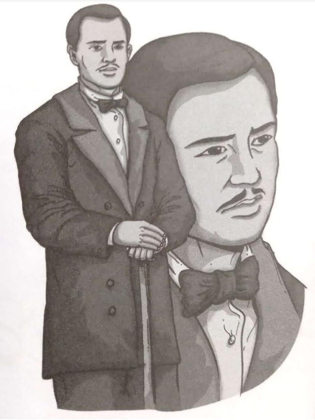
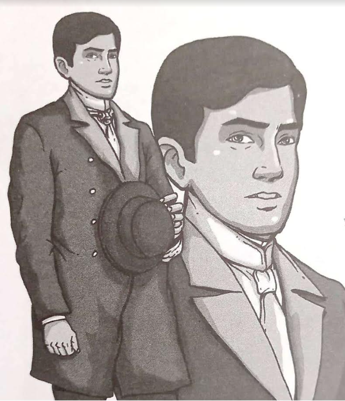

Characters from Noli Me Tangere


Sources:
Cruz E.G., & Mangahas R.G. (2018). Noli Me Tangere ni Jose Rizal. C & E Publishing, Inc.
Book Illustrations by Rizal G. Gerona, Clifford John T. Renegado, Loreto M. Capucao
Original Story by Jose P. Rizal